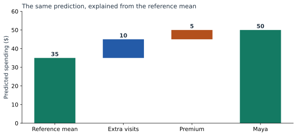

From Linear Contributions to SHAP Values
Maya’s prediction is 50. So far we have explained it as 20 + 20 + 10: intercept, visits, and Premium. But suppose Maya asks, “Why is my prediction higher than the average customer’s?” We need a different starting point to answer that question.
Calculate the reference prediction
Use Asha, Ben, Cara, and Dev as an equally weighted reference population. Their original-model predictions are 25, 35, 35, and 45:
Maya’s difference from that mean = 50 − 35 = 15.
Their mean inputs are two visits and a Premium share of 0.5. For a linear model, substituting these means also gives the mean prediction: 20 + 5 × 2 + 10 × 0.5 = 35. No customer has “half a Premium plan”; 0.5 summarizes the fraction of reference customers who have Premium.
Calculate contributions relative to those means
| Input | Maya − mean | Added ($) |
|---|---|---|
| Visits | 4 − 2 = 2 | 5 × 2 = 10 |
| Premium | 1 − 0.5 = 0.5 | 10 × 0.5 = 5 |
+ visits contribution 10
+ plan contribution 5
= Maya’s prediction 50.
The Premium contribution is now 5 instead of the raw term’s 10. Half the reference customers already have Premium, so the starting average already includes 5 dollars from that term.


Why are these SHAP values?
We will use this rule for a hidden input: fill it with values from the reference rows, predict each completed row, and average the predictions. When an input is known, replace its column with Maya’s value. This is the background-replacement, or interventional, version of the calculation.
| Known about Maya | Four completed-row predictions | Mean |
|---|---|---|
| Nothing | 25, 35, 35, 45 | 35 |
| Visits = 4 | 40, 50, 40, 50 | 45 |
| Premium = 1 | 35, 35, 45, 45 | 40 |
| Both inputs | 50, 50, 50, 50 | 50 |
There are two possible reveal orders. In the first, visits moves the average from 35 to 45, adding 10; Premium moves it from 45 to 50, adding 5. In the second, Premium moves it from 35 to 40, adding 5; visits moves it from 40 to 50, adding 10.
SHAP averages each feature’s contribution over the reveal orders. Here both orders agree, so the SHAP values are 10 for visits and 5 for Premium. They agree because this model adds separate terms and our replacement rule always uses the same reference rows.
Derive the short formula
Write a linear model as an intercept $b$ plus the sum of coefficient-times-input terms. Let $\mu_j$ be the reference mean of input $j$. Its mean prediction is:
Revealing input $j$ replaces its average term $\beta_j\mu_j$ with its actual term $\beta_jx_j$. The increase is therefore:
That increase does not depend on which other inputs were already revealed. Averaging over orders leaves it unchanged. Adding all these differences to the reference prediction reconstructs the original prediction exactly.
This formula is for the replacement rule we just used. It also works when the reference columns are correlated, because the additive model only needs their marginal means for this calculation. A conditional explanation, which changes the hidden-input distribution based on what is known, answers a different question and can allocate credit differently. The reference-choice chapter works through that distinction.
Check the result with SHAP
import numpy as np
import shap
from sklearn.linear_model import LinearRegression
X = np.array([[1, 0], [1, 1], [3, 0], [3, 1]], dtype=float)
y = np.array([27, 33, 33, 47], dtype=float)
maya = np.array([[4, 1]], dtype=float)
model = LinearRegression().fit(X, y)
masker = shap.maskers.Independent(X)
explanation = shap.LinearExplainer(model, masker)(maya)
hand = model.coef_ * (maya - X.mean(axis=0))
print(explanation.base_values) # [35]
print(explanation.values) # [[10, 5]]
np.testing.assert_allclose(explanation.values, hand)
np.testing.assert_allclose(
explanation.base_values + explanation.values.sum(axis=1),
model.predict(maya)
)The downloadable lab additionally checks all reveal orders and 50 randomly generated linear models, including correlated reference inputs and negative coefficients.
Try customers below and above the reference
Keep the reference population fixed and change the explained customer. A Basic customer with two visits has a prediction of 30: average 35, zero visits difference, and a plan contribution of −5.
Connect to the curved and interaction models
For Part 3’s curved model, the reference mean of visits squared is (1 + 1 + 9 + 9) / 4 = 5. It is not the square of mean visits, which would be 4. Maya’s grouped visits contribution is:
Curved-model reference 34 + visits 15 + plan 5 = 54.
For Part 4’s interaction model, reveal order matters. Revealing visits first adds 12, then plan adds 9. Revealing plan first adds 7, then visits adds 14. Averaging gives visits 13 and plan 8:
In that calculation, visits and plan are the two players; their product is rebuilt whenever either input changes. Treating the product as an independently editable third input would define a different explanation problem.
Carry the reference into the sentence
For the original model, we can now explain Maya’s prediction above average precisely: “The reference customers average 35 dollars. Your extra visits add 10, and your Premium plan adds 5 relative to that group, giving 50.” The final chapter turns this into a small set of explanations for different reader questions.
Sources and worked examples
This chapter develops ideas from the lessons below in A Data Odyssey’s Explainable AI playlist. The customer data, calculations, figures, and interactive examples here are original teaching examples. The creator’s companion notebooks use different datasets.
- 8 Plots for Explaining Linear Regression — Conor O’Sullivan, A Data Odyssey.
- SHAP: LinearExplainer and masking choices